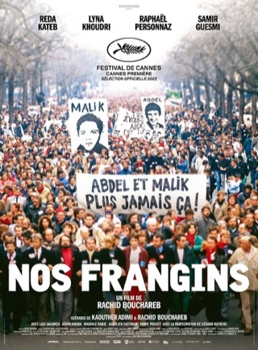

Our Brothers (nos Frangins)
- Directed by
- Rachid Bouchareb
- Country
- France
- Year
- 1995
- Running time
- 92 minutes
- Festival section
- World Cinema
- With
- Reda Kateb, Lyna Khoudri, Raphael Personnaz, Samir Guesmi
- Screenings
- Wed Oct 12, 7:00 PM, Sequoia 2
Thu Oct 13, 3:00 PM, Rafael 1
Source: Festival film page: Wayback Machine copy; Poster from AlloCiné